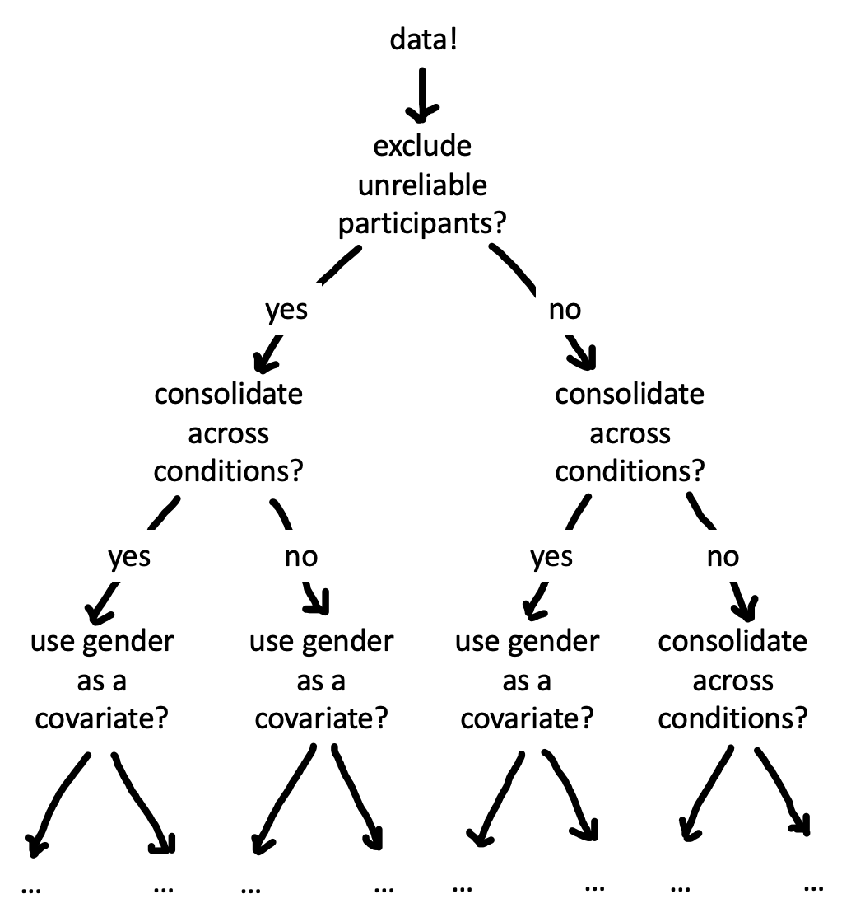
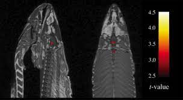

Chapter 11 Preregistration
When not planned beforehand, data analysis can approximate a projective technique, such as the Rorschach, because the investigator can project on the data his own expectancies, desires, or biases and can pull out of the data almost any “finding” he may desire.
The first principle is that you must not fool yourself–and you are the easiest person to fool… After you’ve not fooled yourself, it’s easy not to fool other scientists. You just have to be honest in a conventional way after that.
Although there are plenty of incorrect ways to design and analyse experiments, there is no single correct way. In fact, most research decisions have many justifiable choices - sometimes called “researcher degrees of freedom”. For example, will you stop data collection after 20, 200, or 2000 participants? Will you remove outlier values and how will you define them? Will you conduct subgroup analyses to see whether the results are affected by sex, or age, or some other factor?
Consider a simplified, hypothetical case where you have to make five analysis decisions and there are five justifiable choices for each decision — this alone would result in 3125 (\(5^5\)) unique ways to analyze the data! If you were to make these decisions post hoc (after observing the data) then there’s a danger your decisions will be influenced by the outcome of the analysis (“data-dependent decision making”) and skew towards choices that generate outcomes more aligned with your personal preferences. Now think back to the last time you read a research paper. Of all the possible ways that the data could have been analyzed, how do you know that the researchers did not just select the approach that generated results most favourable to their pet hypothesis?
In this chapter, we will find out why flexibility in the design, analysis, reporting, and interpretation of experiments, combined with data-dependent decision-making, can introduce bias, and lead to scientists fooling themselves and fooling each other. We will also learn about how preregistration – the process of writing down and registering your research decisions before you observe the data – (and other tools) can be used to protect our research from bias and provide the transparency that other scientists need to properly evaluate and interpret our work [@hardwicke2022].
11.1 Lost in a garden of forking paths
 Figure 11.3: The garden of forking paths: many justifiable but different analytic choices are possible for an individual dataset.
One way to visualize researcher degrees of freedom is as a vast decision tree or “garden of forking paths” [@gelman2014; Figure 11.3]. Each node represents a decision point and each branch represents a justifiable choice. Each unique pathway through the garden terminates in an individual research outcome.
Because scientific observations typically consist of both noise (random variation unique to this sample) and signal (regularities that will reoccur in other samples), some of these pathways will inevitably lead to results that are misleading (e.g., inflated effect sizes, exaggerated evidence, or false positives).159 The signal-to-noise ratio is worse in particular situations (alas, common in psychology) that involve small effect sizes, high variation, and large measurement errors [@ioannidis2005]. Researcher degrees of freedom may be constrained to some extent by strong theory [@oberauer2019], community methodological norms and standards, or replication studies, though these constraints may be more implicit than explicit, and can still leave plenty of room for flexible decision-making. The more potential paths there are in the garden that you might explore, the higher the chance of encountering misleading results.
Statisticians refer to this issue as a multiplicity (multiple comparisons) problem. As we talked about in Chapter 6, multiplicity can be addressed to some extent with statistical countermeasures, like the Bonferroni correction; however, these adjustment methods need to account for every path that you could have taken [@gelman2014; @degroot2014]. When you navigate the garden of forking paths while working with the data, it is easy to forget – or even be unaware of – every path that you could have taken, so these methods can no longer be used effectively.
11.1.1 Data-dependent analysis
When a researcher navigates the garden of forking paths during data analysis, their choices might be influenced by the data (data-dependent decision making) which can introduce bias. If a researcher is seeking a particular kind of result (which is likely – see the Depth box below), then they are more likely to follow the branches that steer them in that direction.
You could think of this a bit like playing a game of ‚Äúhot (üî•) or cold (‚òÉÔ∏è)‚Äù where üî• indicates that the choice will move the researcher closer to a desirable overall result and ‚òÉÔ∏è indicates that the choice will move them further away. Each time the researcher reaches a decision point, they try one of the branches and get feedback on how that choice affects the results. If the feedback is üî• then they take that branch. If the answer is ‚òÉÔ∏è, they try a different branch. If they reach the end of a complete pathway, and the result is ‚òÉÔ∏è, maybe they even retrace their steps and try some different branches earlier in the pathway. This strategy creates a risk of bias because it systematically skews results towards researcher‚Äôs preferences [@hardwicke2022].160 We say ‚Äúrisk of bias‚Äù rather than just ‚Äúbias‚Äù because in most scientific contexts, we do not have a known ground truth to compare the results to. So in any specific situation, we do not know the extent to which data-dependent decisions have actually biased the results.
 Figure 11.6: By deliberately exploiting analytic flexibility in the processing pipeline of fMRI data, Bennet et al. (2009) were able to identify ‘brain activity’ in a dead Atlantic Salmon.
In the most egregious cases, a researcher may try multiple pathways until they obtain a desirable result and then selectively report that result, neglecting to mention that they have tried several other analysis strategies.161 “If you torture the data long enough, it will confess” [@good1972]. This is sometimes referred to as ‘p-hacking’, because a common goal is to get p-values to be statistically significant. You may remember an example of this practice in Chapter 3, where participants apparently became younger when they listened to “When I’m 64” by The Beatles. Another example of how damaging the garden of forking paths can be comes from the “discovery” of brain activity in a dead Atlantic Salmon! Researchers deliberately exploited flexibility in the fMRI analysis pipeline and avoided multiple comparisons corrections, allowing them to find brain activity where there was only dead fish [Figure 11.6; @bennett2009].
11.1.2 Hypothesizing after results are known
In addition to degrees of freedom in experimental design and analysis, there is additional flexibility in how researchers interpret research results. As we discussed in Chapter 2, theories can accommodate even conflicting results in many different ways – for example, by positing auxiliary hypotheses that explain why a particular datapoint is special.
The practice of selecting or developing your hypothesis after observing the data has been called “Hypothesizing After the Results are Known”, or “HARKing” [@kerr1998]. HARKing is potentially problematic because it expands the garden of forking paths and helps to justify the use of various additional design and analysis decisions (Figure 11.7). For example, you may come up with an explanation for why an intervention is effective in men but not in women in order to justify a post-hoc subgroup analysis based on sex (see Case Study). The extent to which HARKing is problematic is contested [for discussion see @hardwicke2022]. But at the very least it’s important to be honest about whether hypotheses were developed before or after observing the data.
Figure 11.7: A grid of individual research results. The horizontal axis provides a simplified illustration of the many justifiable design and analysis choices that the scientist can use to generate the evidence. The vertical axis illustrates that there are often several potential hypotheses derived from those theories, which could be constructed or selected when interpreting the evidence. An unconstrained scientist can simultaneously fit evidence to hypotheses and fit hypotheses to evidence in order to obtain their preferred overall result.
![A grid of individual research results. The horizontal axis provides a simplified illustration of the many justifiable design and analysis choices that the scientist can use to generate the evidence. The vertical axis illustrates that there are often several potential hypotheses derived from those theories, which could be constructed or selected when interpreting the evidence. An unconstrained scientist can simultaneously fit evidence to hypotheses and fit hypotheses to evidence in order to obtain their preferred overall result.](images/prereg/grid.png)
But hang on a minute! Isn’t it a good thing to seek out interesting results if they are there in the data? Shouldn’t we “let the data speak”? The answer is yes! But it’s crucial to understand the distinction between exploratory and confirmatory modes of research.162 In practice, an individual study may contain both exploratory and confirmatory aspects which is why we describe them as different “modes.” Confirmation involves making research decisions before you’ve seen the data whereas exploration involves making research decisions after you’ve seen data.
The key things to remember about exploratory research are that you need to (1) be aware of the increased risk of bias arising from data-dependent decision making and calibrate your confidence in the results accordingly; (2) be honest with other researchers about your analysis strategy so they are also aware of the risk of bias and can calibrate their confidence in the outcomes accordingly. In the next section, we will learn about how preregistration helps us to make this important distinction between exploratory and confirmation research.
11.2 Reducing risk of bias, increasing transparency, and calibrating confidence with preregistration
You can counter the problem of researcher degrees of freedom and data-dependent decision-making by making research decisions before you have seen the data – like planning your route through the garden of forking paths before you start your journey [@wagenmakers2012; @hardwicke2022]. If you stick to the planned route, then you have eliminated the possibility that your decisions were influenced by the data.
Preregistration is the process of declaring your research decisions in a public registry before you analyze (and often before you collect) the data. Preregistration ensures that your decisions are data-independent, which reduces risk of bias arising from the issues described above. Preregistration also transparently conveys to others what you planned, helping them to determine the risk of bias and calibrate their confidence in the research results. In other words, preregistration provides the context needed to properly evaluate and interpret research, dissuading researchers from engaging in questionable research practices like p-hacking and HARKing, because they can be held accountable to their original plan.
Preregistration does not require that you specify all research decisions in advance, only that you are transparent about what was planned, and what was not planned. This transparency helps to make a distinction between which aspects of the research were exploratory and which were confirmatory (Figure 11.8). All else being equal, we should have more confidence in confirmatory results, because there is a lower risk of bias. Exploratory results have a higher risk of bias, but they are also more sensitive to serendipitous (unexpected) discoveries. So the confirmatory mode is best suited to testing hypotheses and the exploratory mode is best suited to generating them. Therefore, exploratory and confirmatory research are both valuable activities – it is just important to differentiate them [@tukey1980]! Preregistration offers the best of both worlds by clearly separating one from the other.
Figure 11.8: Preregistration clarifies where research activities fall on the continuum of prespecification. When the preregistration provides little constraint over researcher degrees of freedom (i.e., more exploratory research), decisions are more likely to be data-dependent, and consequently there is a higher risk of bias. When preregistration provides strong constraint over researcher degrees of freedom (i.e., more confirmatory research), decisions are less likely to be data-dependent, and consequently there is a lower risk of bias. Exploratory research activities are more sensitive to serendipitous discovery, but also have a higher risk of bias relative to confirmatory research activities. Preregistration transparently communicates where particular results are located along the continuum, helping readers to appropriately calibrate their confidence.
![Preregistration clarifies where research activities fall on the continuum of prespecification. When the preregistration provides little constraint over researcher degrees of freedom (i.e., more exploratory research), decisions are more likely to be data-dependent, and consequently there is a higher risk of bias. When preregistration provides strong constraint over researcher degrees of freedom (i.e., more confirmatory research), decisions are less likely to be data-dependent, and consequently there is a lower risk of bias. Exploratory research activities are more sensitive to serendipitous discovery, but also have a higher risk of bias relative to confirmatory research activities. Preregistration transparently communicates where particular results are located along the continuum, helping readers to appropriately calibrate their confidence.](images/prereg/continuum.png)
In addition to the benefits described above, preregistration may improve the quality of research by encouraging closer attention to study planning. We’ve found that the process of writing a preregistration really helps facilitate communication between collaborators, and can catch addressable problems before time and resources are wasted on a poorly designed study. Detailed advanced planning can also create opportunities for useful community feedback, particularly in the context of Registered Reports (see Depth box below), where dedicated peer reviewers will evaluate your study before it has even begun.
11.3 How to preregister
High-stakes studies such as medical trials must be preregistered [@dickersin2012]. In 2005, a large international consortium of medical journals decided that they would not publish unregistered trials. The discipline of economics also has strong norms about study registration (see e.g. https://www.socialscienceregistry.org). But preregistration is actually pretty new to psychology [@nosek2018], and there’s still no standard way of doing it – you’re already at the cutting edge!
We recommend using the Open Science Framework (OSF) as your registry. OSF is one of the most popular registries in psychology and you can do lots of other useful things on the platform to make your research transparent, like sharing data, materials, analysis scripts, and preprints. On the OSF it is possible to “register” any file you have uploaded. When you register a file, it creates a time-stamped, read-only copy, with a dedicated link. You can add this link to articles reporting your research.
One approach to preregistration is to write a protocol document that specifies the study rationale, aims or hypotheses, methods, and analysis plan, and register that document.163 You can think of a study protocol a bit like a research paper without a results and discussion section (here’s an example from one of our own studies: https://osf.io/2cnkq/). The OSF also has a collection of dedicated preregistration templates that you can use if you prefer. These templates are often tailored to the needs of particular types of research. For example, there are templates for general quantitative psychology research ["PRP-QUANT" @bosnjak2021], cognitive modelling [@cruwell2021], and secondary data analysis [@akker2019]. The OSF interface may change, but currently this guide provides a set of steps to create a preregistration.
Once you’ve preregistered your plan, you just go off and run the study and report the results, right? Well hopefully… but things might not turn out to be that straightforward. It’s quite common to forget to include something in your plan or to have to depart from the plan due to something unexpected. Preregistration can actually be pretty hard in practice [@nosek2019]!
Don’t worry though - remember that a key goal of preregistration is transparency to enable others to evaluate and interpret research results. If you decide to depart from your original plan and conduct data-dependent analyses, then this decision may increase the risk of bias. But if you communicate this decision transparently to your readers, they can appropriately calibrate their confidence in the results. You may even be able to run both the planned and unplanned analyses as a robustness check (see Depth box) to evaluate the extent to which this particular choice impacts the results.
When you report your study, it is important to distinguish between what was planned and what was not. If you ran a lot of data-dependent analyses, then it might be worth having separate exploratory and confirmatory results sections. On the other hand, if you mainly stuck to your original plan, with only minor departures, then you could include a table (perhaps in an appendix) that outlines these changes (for example, see Supplementary Information A of this article).
11.4 Chapter summary: Preregistration
We’ve advocated here for preregistering your study plan. This practice helps to reduce the risk of bias caused by data-dependent analysis (the “garden of forking paths” that we described) and transparently communicate the risk of bias to other scientists. Importantly, preregistration is a “plan, not a prison”: in most cases preregistered, confirmatory analyses coexist with exploratory analyses. Both are an important part of good research – the key is to disclose which is which!